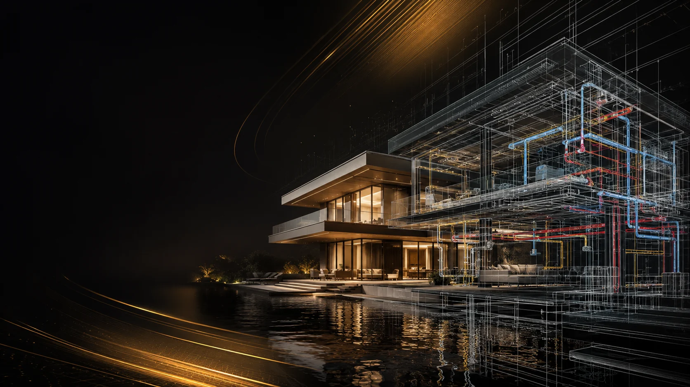
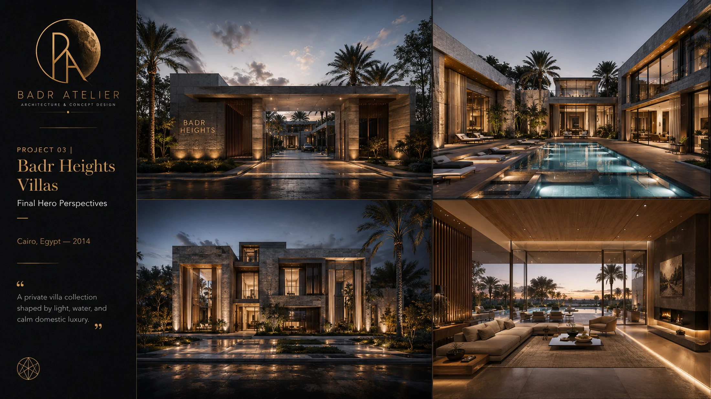

SPATIAL LOGIC
Separate guest, family and private life with sequence, light and proportion rather than unnecessary corridors.

Private Villa & House • Architecture + Execution
The value of a private residence is often found in the decisions that cannot be hidden: proportion, privacy, natural light, movement, material junctions and execution quality. BADR develops the idea and carries it into buildable information without losing the original spatial character.
Separate guest, family and private life with sequence, light and proportion rather than unnecessary corridors.
Turn a limited material palette into a precise architectural language through junctions, shadow lines and detailing.
Use drawings and BIM coordination to protect ceiling zones, shafts, façade lines and service integration before construction.

A premium residence should feel composed rather than decorated. Arrival, courtyard, glazing, landscape and interior thresholds work together as one experience.
This visual is representative BADR residential portfolio imagery; replace with the final Villa & House project photography/render set when supplied.
Start with the way you want the house to live — then let architecture, engineering and detailing protect that experience through construction.
START A PRIVATE RESIDENCE ↗